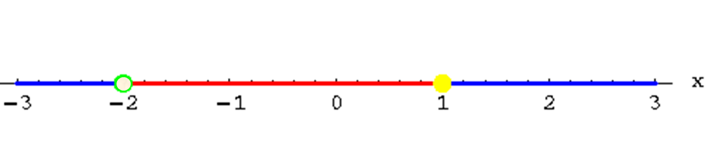

Rational Equations & Partial Fractions
Homework
Solve for x...
$\table x/{x-2}+1/{x-4}=2/{x^2-6x+8}; x/{x-2}+1/{x-4}=2/{(x-2)(x-4)}; x/{x-2}({(x-2)(x-4)}/1)+1/{x-4}({(x-2)(x-4)}/1)=2/{(x-2)(x-4)}({(x-2)(x-4)}/1); x(x-4)+x-2=2; x^2-4x+x-2=2; x^2-3x-4=0; (x-4)(x+1)=0; x=4\text" , " x=-1$
$x=-1$ being the correct answer
$\table x/{x-2}+1/{x-4}=2/{x^2-6x+8}; x/{x-2}+1/{x-4}=2/{(x-2)(x-4)}; x/{x-2}({(x-2)(x-4)}/1)+1/{x-4}({(x-2)(x-4)}/1)=2/{(x-2)(x-4)}({(x-2)(x-4)}/1); x(x-4)+x-2=2; x^2-4x+x-2=2; x^2-3x-4=0; (x-4)(x+1)=0; x=4\text" , " x=-1$
$x=-1$ being the correct answer
Decompose a Frction into Partial Fractions
$\table {3x-1}/{x^2-1}, =, {3x-1}/{(x+1)(x-1)}, =, A/{x+1}+B/{x-1}; , , 3x-1, =, A(x-1)+B(x+1)$
Use undefined values to find A & B
$\table \html'<b class="underline">When x=1</b>'; 3(1)-1=A(1-1):B(1+1); 2=2B; 1=B; \html'<b class="underline">When x=-1</b>'; 3(-1)-1=A(-1-1)+B(-1+1); -4=-2A; 2=A$
$\table {3x-1}/{x^2-1}, =, {3x-1}/{(x+1)(x-1)}, =, A/{x+1}+B/{x-1}; , , 3x-1, =, A(x-1)+B(x+1)$
Use undefined values to find A & B
$\table \html'<b class="underline">When x=1</b>'; 3(1)-1=A(1-1):B(1+1); 2=2B; 1=B; \html'<b class="underline">When x=-1</b>'; 3(-1)-1=A(-1-1)+B(-1+1); -4=-2A; 2=A$
$\table A/{x+1}+B/{x-1}=2/{x+1}+1/{x-1};
\text"and so...";
{3x-1}/{x^2-1}=2/{x+1}+1/{x-1}$
Rational Inequalites
Use test points in between all zeros & undefined values
Solve $\table {x-1}/{x+2}≤0; ({x+2}/1){x-1}/{x+2}≤0({x+2}/1)$
Use test points in between all zeros & undefined values
Solve $\table {x-1}/{x+2}≤0; ({x+2}/1){x-1}/{x+2}≤0({x+2}/1)$
| undefined at $x=-2$ | $\table x-1 ≤\text" OR " ≥ 0; x ≤ \text" OR " ≥ 1$ | zero at $x=1$ |
|  | ||
| $\table f(-3)=4; 4≰0$ | $\table f(0)=-1/2; -1/2 ≤0$ | $\table f(2)=1/4; 1/4≰0$ |
| Ans:$-2<x≤1$ | ||